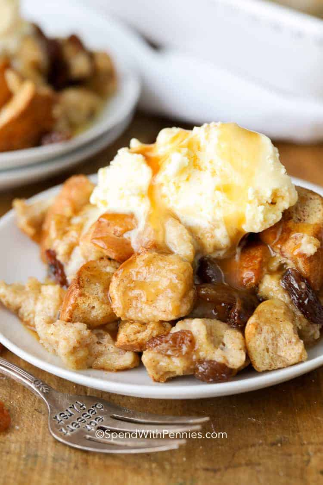

Bread Pudding

Description
Bread Pudding is one of my favorite deserts of all-time and here is one of the best recipes I have ever tried.. just like Grandma used to make!
Ingredients
- 10 slices of white bread
- 1/2 cup raisons
- 3 eggs
- 1 3/4 cups light cream
- 1/4 cup brown sugar
- 1/4 cup white sugar
- 1 teaspoon vanilla
- 1 teaspoon cinnamon
- 2 tablespoons butter(melted)
Directions
- Preheat oven to 350F. Butter an 8in baking dish
- Cut bread into 1" pieces and place them on a baking sheet. Bake 4 minutes or until slightly dried
- Meanwhile, in a medium bowl whisk together eggs, cream, sugar, vanilla, and cinnamon
- Pour the egg mixture over the bread, Add raisons and toss lightly(use hands to not break bread)
- Place the bread mixture in baking dish. Drizzle butter over mixture
- Bake 35-40 minutes until a knife inserted into the center comes out clean
- Serve warm or at room temperature